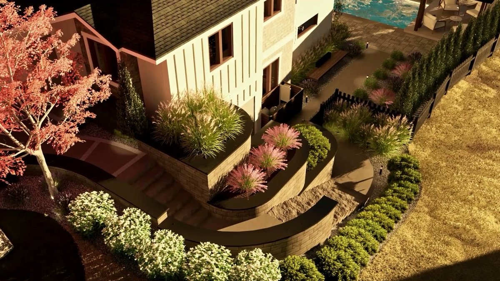

Call (250) 812 6112
Call (250) 812 6112
Call (250) 812 6112
Call (250) 812 6112

Your slope is not the problem. Most lots around Vernon have some, and left alone it is the part of your yard you walk past, mow around, or watch wash into the flower bed every spring. Built right, it turns into levels you use: a patio that catches the evening sun and a flat lawn the kids can play on.
The common mistake is starting with the wall. You end up with a wall, and the slope above it is still unusable.
On a sloped lot, three things get decided on the same drawing. Leave one out and the other two stop working.
Levels. Start with what each flat area is for: dining, lawn, a pool, a fire. How many levels you need, and how big each one is, comes from that list, not from how many walls fit.
Steps. Steps go where people walk: back door to patio, patio to lawn, lawn to gate. Put them in the wrong place and you get a worn shortcut through your planting instead.
Water. The North Okanagan freezes, thaws and then sends water down the slope. Every level changes where that water goes, so your drainage gets drawn with the levels, not added after. Water with nowhere to go ends up behind a wall or against your foundation.
Decide those three first and the walls become simple: they hold the levels you chose.
Walls change the shape of a yard, so your whole space gets designed in 2D and 3D first. You see the levels, the steps, the planting and the finished space before a single machine turns up, with the cost to build it attached.
Whoever looks at your project should check the slope itself, how water moves across it, what the soil is doing, and how machines get in. Access and rock are two of the things that move a budget, and you should hear which ones apply while you are standing in your yard.
Some walls need a permit or an engineer. That depends on the height, what sits above and below the wall, and what your municipality requires. You should get a straight answer at the consult, not halfway through the build.
Doing a slope properly costs more than stacking block against it, and your quote won't be the cheapest one you get. The base and drainage you never see are a big part of why. If someone has quoted you a lot less, ask them what is going under it and behind it.
If price is the only thing that matters, you are better off with someone else, and better to hear that now than three weeks in. If you want your slope turned into space you use, drawn first and built by the people who drew it, that is the job. You get a design-build crew with twenty years in outdoor living, so you are not managing three companies who blame each other. Your design consult is free, with no obligation, and you hear back the same working day. Around here, the usual story about getting a yard built is that you send the enquiry and never get a call back.
Site access, drainage, rock and material choices. You hear which ones apply to your yard at the free design consult.
Some walls do. It depends on the height, what sits above and below and what your municipality requires, and you get a straight answer at the consult.
More on how walls hold the levels: retaining walls in Vernon and the North Okanagan.